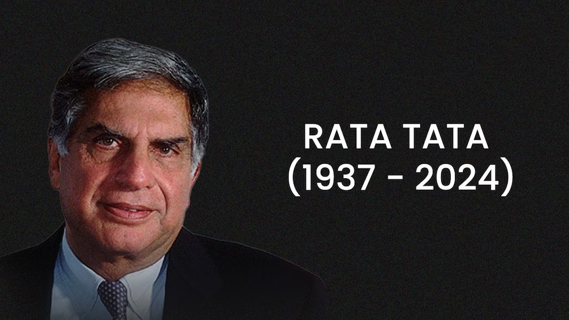
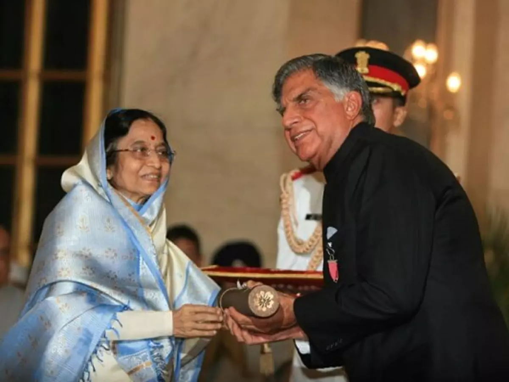
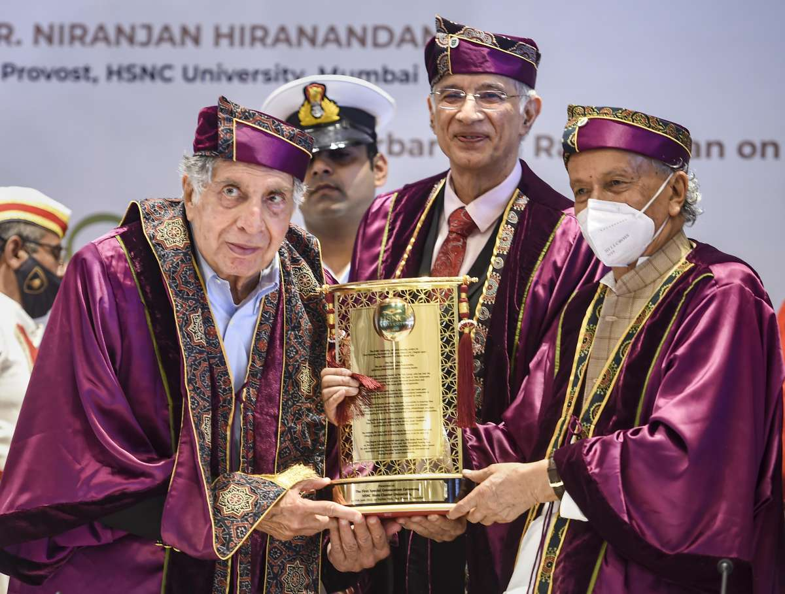
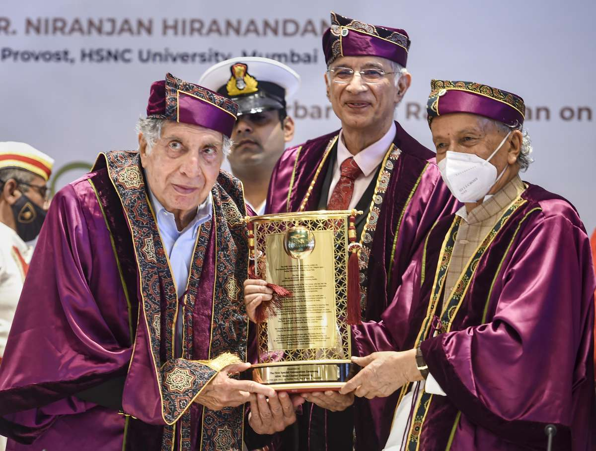
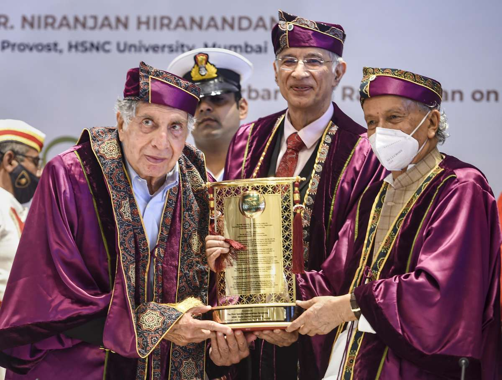

Timeline
- 1937: Born in Bombay, British India.
- 1955: Enrolled at Cornell University for Architecture and Structural Engineering.
- 1962: Graduated from Cornell University in Architecture.
- 1962: Joined Tata Group as an apprentice at Tata Steel.
- 1971: Appointed Director-in-Charge of National Radio & Electronics Company Limited (NELCO).
- 1981: Named Chairman of Tata Industries.
- 1991: Became Chairman of Tata Sons, succeeding J.R.D. Tata.
- 1998: Launched Tata Indica, India's first indigenously developed car.
- 2000: Acquired Tetley Tea, marking Tata's expansion in global markets.
- 2004: Tata Motors acquired South Korean truck manufacturer Daewoo Commercial Vehicles.
- 2007: Tata Steel acquired Corus Group for $12 billion, making it the fifth-largest steel producer.
- 2008: Acquired Jaguar and Land Rover from Ford, expanding Tata's global automotive presence.
- 2009: Launched Tata Nano, the world's cheapest car.
- 2012: Retired from Tata Group.
- 2016: Returned as interim Chairman of Tata Sons.
- 2017: Stepped down from Tata Sons permanently.
- 2022: Opened a cancer hospital in Assam.
Major Achievements
Padma Bhushan
Padma Vibhushan
Jaguar Land Rover Acquisition
Tata Nano - World's Cheapest Car
Development of Tata Trusts
Expansion of Tata Group into Global Markets
Image Gallery



 

